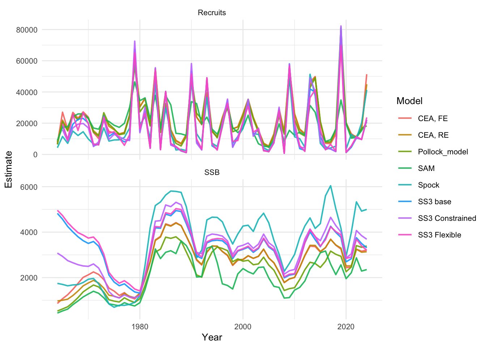

Year | SSB | Bmsy | B/Bmsy | meanF | Fmsy | F/Fmsy | F35 |
|---|---|---|---|---|---|---|---|
2,024 | 3,389.48 | 2,400.99 | 1.412 | 0.1987 | 0.499 | 0.398 | 0.4406 |
Assessment of the Walleye pollock Stock in the Eastern Bering Sea
Disclaimer
These materials do not constitute a formal publication and are for information only. They are in a pre-review, pre-decisional state and should not be formally cited or reproduced. They are to be considered provisional and do not represent any determination or policy of NOAA or the Department of Commerce.
Please cite this publication as:
[AUTHOR NAME]. [YEAR]. Assessment of the Walleye pollock Stock in the Eastern Bering Sea. National Marine Fisheries Service, [CITY], [STATE]. pp.
1 Executive Summary
1.1 Assessment Model
1.2 Reference Points, Stock Status, and Projections
2 Introduction
Testing adding in an introduction for Walleye pollock. There is currently no read of parameters for child documents.
2.1 Stock ID
2.2 Management History
2.3 Fishery Descriptions
2.4 Ecosystem Considerations
Ecosystem considerations and/or climate indicators were not included in this assessment.
3 Data
3.1 Life History
3.2 Catch
3.3 Indices and Standardization
3.4 Composition Data
3.5 Absolute Abundance
3.6 Environmental/Ecosystem Indicator Data
4 Assessment
4.1 Current Modeling Approach
4.2 Configuration of the Base Model
4.3 Bridging
4.4 Modeling Results
4.4.1 Parameter Estimates
4.4.2 Time Series
4.4.3 Model Fits
4.4.4 Model Diagnostics
4.5 Sensitivity Analyses
4.6 Management Benchmarks
4.7 Projections
5 Discussion
6 Acknowledgements
This document was produced using the R package asar (Schiano et al. 2025), which is free to use and publicly available on GitHub.
7 References
Schiano, S., Breitbart, S., and Saul, S. 2025. Asar: Build NOAA stock assessment report. Available from https://github.com/nmfs-ost/asar.
8 Tables
Model | Recruits | SSB |
|---|---|---|
CEA, FE | 51,371.32 | 3,208.31 |
CEA, RE | 44,946.26 | 3,138.32 |
Pollock_model | 18,286.00 | 3,389.48 |
SAM | 20,801.03 | 2,352.90 |
SS3 Constrained | 22,022.46 | 3,687.64 |
SS3 Flexible | 23,672.36 | 3,203.65 |
SS3 base | 22,173.41 | 3,308.61 |
Spock | 41,317.98 | 4,998.88 |
9 Figures
